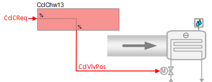
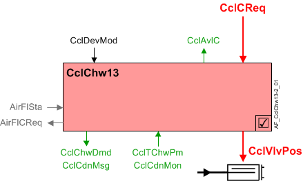
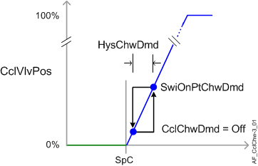

Chilled water cooling coil, active chilled beam (CclChw13)
 | This application function operates the control valve for an active chilled beam that cools an air stream. The room is cooled using air that flows directly onto the beam from ducted air. The valve position is calculated based on request signal (from the room controller) received for cooling. There is an optional binary input for condensation detection. |
Required elements and how to configure them:
Element | I/O | Signal type |
|---|---|---|
CclVlvPos "Cooling coil valve position" | On-board output, Cooling coil valve position | Chilled beam active any signal type |
Function
The figure below shows BACnet objects associated with this application function. Primary signal flow is summarized as follows:
Cooling coil cooling request (CclCReq) is received and processed into the output signal for cooling coil valve position (CclVlvPos).
Basic function: Accept request signal from associated room controller and pass it through a device mode logic switch; Output the result as a command to the BACnet object that controls the device.
Note
To reduce the risk of condensation, the modulating water valve can be closed at equipment protection priority by cut-off logic in the condensation monitoring feature and/or dew point temperature monitoring feature (optional; must be configured). The dew point temperature monitoring feature compares the dew point temperature in the room to the chilled water temperature.

| Command or request (or related) |
| Notification of condition or status, or availability |
| Device mode |
| Interlock (internal signal, not a BACnet object; see Interlocks section for additional information) |


Sequence
Chilled water valve modulation: In response to a cooling request the cooling valve is modulated to control the room temperature at setpoint. In response to external triggers for special modes such as warm-up, cool down, or safety conditions, the cooling valve may be set to off or fully open.
Request signal from a room temperature PID controller is received from the associated "room" AF.
Note
This AF does not perform loop control; its main purpose is to run commands. Loop control processes (for this AF) are managed in the "room" AF(s) that collaborate with this AF to command the end device.
Condensation monitoring with cut-off logic: This AF has a condensation monitor detection input (CclCdnMon). When condensation is detected, device mode is set to off at priority 4 and the cooling valve is commanded closed at priority 5.
Parameter EnCdnMonIn must be set to 1:Yes for the cut-off logic to function (see Configuration).
Dew point temperature monitoring with cut-off logic: This AF monitors the primary chilled water temperature (CclTChwPm) and compares it to the current dew point temperature of the space. (Dew point temperature (TDwp) is calculated elsewhere and received via internal signal.)
When CclTChwPm is below the dew point temperature by a configurable difference (TDiffDwpChwMin), device mode is set to off at priority 4 and the cooling valve is commanded closed at priority 5. When CclTChwPm rises above TDiffDwpChwMin plus a configurable deadband (HysTDiffDwpChw), device mode is released.
Parameter EnTDwp must be set to 1:Yes for the cut-off logic to function (see Configuration).

Device mode: The input signal for device mode is a multistate value.
CclDevMod supports the following states:
- Off
- Control mode (modulation)
- Fully open
Cooling available status: When the cooling coil is available for cooling, the binary output signal for "Cooling coil available for cooling" (CclAvlC) will be "Yes" (available). CclAvlC is used by the system to regulate cooling resources. For example, if there is a call for cooling but the cooling coil is not available because it is already at maximum capacity (because device mode is fully open), then CclAvlC will signal "No" and the next available cooling resource in the temperature control sequence will be activated.
For cooling available status to be "Yes", device mode must equal "Control mode" (modulation).
Interlocks
Interlocks are (typically) binary signals that ensure equipment protection. Additional signals help coordinate the interaction sequences between HVAC devices.
Signals in table are internal signals, not BACnet objects. For this reason they are not visible in the tool, but the parameters associated with them are. See comment column for hints on parameters that affect interlock functionality.
Signal | Type | Direction | Description | Comment |
|---|---|---|---|---|
AirFlCReq | Boolean | Out | Air flow cooling request | See Configuration section for parameters named "...AirFlCReq". |
AirFlSta | Boolean | In | Air flow status | Parameter EnMonAirFlSta must = Yes. See Configuration section for additional information. |
Supply chain interface, CclChwDmd: The output signal for cooling coil chilled water demand is a multistate value.
CclChwDmd supports the following states:
- Off (no demand signal)
- Cooling demand (demand signal is active)
- Free cooling (cooling device is in free cooling mode)
Free cooling can be initiated by the central plant when surplus cooling capacity is available. Under certain conditions, the room can take advantage of surplus cooling capacity in the absence of an explicit cooling demand; the room temperature must be below the setpoint associated with the current room climate mode (Comfort, Pre-Comfort etc.). This type of free cooling is different from "economizer" free cooling, which uses an outside air damper.
The following figure(s) illustrates control modulation and related functions.

Supply chain interface, CclCdnMsg: The output signal for the condensation message is Boolean. The two supported states are:
- Normal (both the condensation monitor input and the dew point monitoring logic output are False)
- Alert (either the condensation monitor input or the dew point monitoring logic output is True)
If CclCdnMsg switches to Alert in a specified number of chilled beams, the primary plant can take appropriate action. For example, the primary chilled water temperature setpoint can be set to a higher value.
Configuration
 Parameters
Parameters
Description | Parameter | Default value |
|---|---|---|
Enable condensation monitor input 0:No | EnCdnMonIn | 0:No |
Enable dewpoint temperature 0:No | EnTDwp | 0:No |
Condensation prevention setpoints | ||
Minimum difference dewpoint temperature/chilled water temperature | TDiffDwpChwMin | 1 [K] |
Hysteresis for minimum difference dewpoint temperature/chilled water temperature | HysTDiffDwpChw | 1 [K] |
Interlocks | ||
Switch-on point for air volume flow cooling request | SwiOnAirFlCReq | 4 [%] |
Hysteresis for air volume flow cooling request | HysAirFlCReq | 2 [%] |
Switch-on delay for air volume flow cooling request | DlyOnAirFlCReq | 30 [s] |
Enable monitoring for air volume flow state 0:No | EnMonAirFlSta | 0:No |
Chilled water demand | ||
Switch-on point for chilled water demand | SwiOnPtChwDmd | 4 [%] |
Hysteresis for chilled water demand | HysChwDmd | 2 [%] |
Internal settings – do not change | ||
Temperature difference unit | TDiffUnit | [K] |
Interface
Interface | Description | Type | Ref. | Owned by |
|---|---|---|---|---|
CclVlvPos | Cooling coil valve position | AO | ◉ | Room segment / Field device |
CclCdnMon | Cooling coil condensation monitor 0:Off | BI | ◉ | Room segment / Field device |
CclCdnMsg | Cooling coil condensation message 0:Normal | BCalcVal | ● | - |
CclDevMod | Cooling coil device mode 1:Off | MPrcVal | ● | - |
CclCReq | Cooling coil cooling request | ACalcVal | ● | - |
CclAvlC | Cooling coil available for cooling 0:No | BCalcVal | ● | - |
CclChwDmd | Cooling coil chilled water demand 1:Off | MCalcVal | ● | - |
CclTChwPm | Cooling coil primary chilled water temperature | APrcVal | ● | - |
CclSplyChw | Cooling coil supply chain for chilled water | GrpMbr | ● | - |
Engineering and commissioning
Optional. If empty hide this section by setting node property Filter to "Exclude ABTprog".